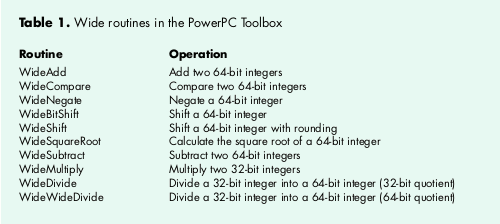
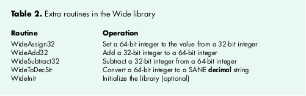
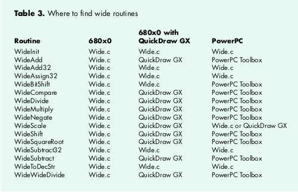
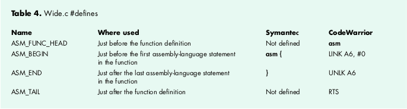

When an application has to perform integer arithmetic with
numbers larger than 32 bits on both the PowerPC and 680x0
platforms, you could use the floating-point types of the SANE and
PowerPC Numerics libraries. But if all you really need is a larger
integer, a better choice is to use the existing 64-bit math routines
available on the PowerPC platform and write an equivalent library
for the 680x0 Macintosh. This article presents just such a library.
Developers of PowerPC applications that need 64-bit math can simply call the various
"wide" Toolbox routines. These routines perform addition, subtraction, multiplication,
division, square root, and a few other operations. On the 680x0-based Macintosh,
some of these same routines are available in QuickDraw GX. But if you can't assume
your customers have QuickDraw GX installed, you need a library that supports 64-bit
math.
The Wide library presented in this article works on both platforms and has exactly the
same interface and types as the wide routines in the Toolbox on PowerPC machines. The
library also provides some new routines such as 32-bit to 64-bit add and subtract
and a 64-bit-to-string conversion function. The library is included on this issue's
CD, along with its source code.
All the routines use the 64-bit data type defined in the header file Types.h, which is
the standard type used for signed 64-bit integers on both the PowerPC and 680x0
Macintosh:
struct wide {
Sint32 hi; /* upper 32 bits (signed) */
Uint32 lo; /* lower 32 bits (unsigned) */
};
typedef struct wide wide, *WidePtr;
Before plunging into the Wide library, let's see what 64-bit math routines I'll be
talking about. First, I'll introduce those that are available on PowerPC machines, then
those you'll find on a 680x0 Macintosh with QuickDraw GX, and finally the routines in
the Wide library.
POWERPC TOOLBOX
In the header file FixMath.h, the routines listed in Table 1 are defined for 64-bit math
on the PowerPC platform.

680X0 QUICKDRAW GX
On 680x0 machines that have QuickDraw GX installed, all the wide routines for the
PowerPC platform listed in Table 1 are available, with the exception of WideBitShift.
The QuickDraw GX header file GXTypes.h defines the wide routine types and function
prototypes in exactly the same way that the header file FixMath.h does for PowerPC
machines.
In addition, QuickDraw GX on 680x0 machines has a routine that the PowerPC
platform doesn't have: WideScale. This function returns the bit number of the
highest-order nonzero bit in a 64-bit number. The Wide library implements this
function on the PowerPC platform.
THE WIDE 64-BIT LIBRARY
The Wide 64-bit integer math library on this issue's CD provides all the wide
routines that are available on PowerPC machines and on 680x0 machines with
QuickDraw GX, plus a few extras. The extra routines, which are available on both the
PowerPC and 680x0 platforms, are listed in Table 2.

WideAssign32, WideAdd32, WideSubtract32. These routines are
self-explanatory.
WideToDecStr.This routine converts a signed 64-bit integer to the SANE string type
decimal, which is also defined by the PowerPC Numerics library. This string
structure is a good intermediate format for final conversion to a string format of your
choosing.
Since WideToDecStr calls the SANE library to generate the string, SANE must be linked
with your 680x0 application. The SANE library is included with all the major
development systems.
To convert the string returned by WideToDecStr to a Pascal string, call the SANE
routine dec2str.
If you want to generate a localized number, take a look at the article
"International Number Formatting" in develop Issue 16. You could call the
LocalizeNumberString function from that article after converting the output
of WideToDecStr to a Pascal string, or you could modify LocalizeNumberString
to accept the output of WideToDecStr.*
WideInit.The library is self-initializing; the first time you call any wide routine,
WideInit is also called. If the execution speed of your first runtime call to a wide
routine is important, you have the option of calling WideInit during your application's
startup to avoid that overhead.
The purpose of WideInit is to determine what processor is being used, or emulated; it
calls Gestalt to make this determination. If your Macintosh has a 68020-68040 CPU
(68020, 68030, or 68040), the library will use the 64-bit multiply and divide
instructions available on that processor; otherwise, the library will have to call
software subroutines for those operations. On 68000 machines, such as the Macintosh
Plus and SE, the processor's multiply instruction is limited to 32 bits and the library
has no choice but to use the slower algorithmic approach for multiplication and
division.
The library can be compiled on the 680x0 and PowerPC platforms using either the
Metrowerks CodeWarrior or Symantec C development system. The library tests which
development system is compiling it and, if it's not CodeWarrior or Symantec, the
preprocessor displays an error message saying the library needs to be ported to your
environment. This is necessary because there's some inline assembly language in the
source file, as discussed later in this section, and different C compilers handle
assembly language differently.
While the interface routines to our 64-bit library are the same on the PowerPC and
680x0 machines, when you compile the library a different subset of routines is linked
in, depending on your environment:
Table 3 summarizes where the wide routines can be found on the different platforms.

Note that the Wide library decides at compile time which routines to use. When
QuickDraw GX header files are not included, the Wide library routines are called. If
your application needs to make a runtime decision about whether to use QuickDraw GX,
you'll need to make some changes to the library. One solution is to rename the Wide
library routines and remove the conditional compilation tests for QuickDraw GX from
the source. Then at run time you can decide which version to call -- the QuickDraw GX
routines if they're available, or the internal Wide library routinesif not.
UNIVERSAL HEADERS
The Wide library was compiled with version 2.1 of Apple's universal headers. The
latest headers are available on this issue's CD. You should make sure you have a recent
version of these headers, because the library uses the constant GENERATING68K. If the
header file ConditionalMacros.h doesn't contain this constant, your version of the
universal headers is too old.
680X0 ASSEMBLY LANGUAGE
Some of the routines in the library are written in assembly language to take advantage
of the 64-bit multiply and divide instructions on 68020-68040 machines, because
on these machines the C language will use only 32-bit multiply and divide
instructions. On PowerPC machines, the Wide library doesn't need assembly language
because the 64-bit multiply and divide routines are provided by the Toolbox.
The library's source file Wide.c contains both C and assembly language. It has been
successfully compiled by Symantec C 7.0.4 and CodeWarrior 7. If you want to compile
the library on any other development system, you may have to do a little work porting
it. Most of the changes will be confined to the conditional compilation statements at the
beginning of Wide.c where the differences in SANE types and inline assembly language
are handled.
Now let's look at a couple of the more interesting routines in the Wide library to see
how they work. See the source code on the CD for full implementations of all the
routines.
WIDEMULTIPLY
WideMultiply (Listing 1) performs a 32-by-32-bit multiply and produces a 64-bit
result. The first and second parameters are the two signed 32-bit integers to be
multiplied together. The return value is a pointer to the 64-bit result that's also
returned via the third parameter.
Listing 1. The multiply routine
wide *WideMultiply (
long multiplicand, /* in: first value to multiply */
long multiplier, /* in: second value to multiply */
wide *target_ptr) /* out: 64 bits to be assigned */
{
/* Initialize Wide library if not already done. */
if (!gWide_Initialized) WideInit();
/* If the 64-bit multiply instruction is available... */
if (gWide_64instr) {
/* Execute the assembly-language instruction MULS.L */
Wide_MulS64(multiplicand, multiplier, target_ptr);
}
else {
/* Call the Toolbox to perform the multiply. */
LongMul(multiplicand, multiplier, (Int64Bit *) target_ptr);
}
return (target_ptr);
}
WideMultiply first tests whether the library has been initialized yet; if not, it calls
WideInit. Next the routine tests whether the 64-bit multiply instruction is available
on the current CPU by examining the global variable gWide_64instr (which was set
by the initialization routine WideInit). If the instruction is available, WideMultiply
calls the assembly-language function Wide_MulS64 to take advantage of it (as
described later); otherwise, WideMultiply calls the Toolbox routine LongMul to
perform the multiplication, as would be the case on 68000 machines.
WIDESQUAREROOT
The WideSquareRoot function (Listing 2) takes a 64-bit unsigned number as input and
returns a 32-bit unsigned result. All possible results can be expressed in 32 bits, so
overflow isn't possible.
Listing 2. The square root routine
unsigned long WideSquareRoot (
const wide *source_ptr) /* in: value to take the square root of */
{
wide work_integer;
Extended_80 extended_80_number;
/* Initialize Wide library if not already done. */
if (!gWide_Initialized) WideInit();
/* Convert "wide" number to "extended" format. */
Wide_ToExtended(&extended_80_number, source_ptr);
/* If compiling with CodeWarrior, the parameter to sqrt is a
pointer instead of a value, as defined in PowerPC Numerics. */
#ifdef __MWERKS__
Sqrt(&extended_80_number);
#else
extended_80_number = sqrt(extended_80_number);
#endif
/* Convert "extended" format to "wide" number. */
Wide_FromExtended(&work_integer, &extended_80_number);
/* OK to ignore work_integer.hi as it's always 0. */
return (work_integer.lo);
}
For this routine I decided to let the SANE library do the work of generating the square
root. The routine converts the 64-bit input number to an 80-bit floating-point
number and then calls the SANE library function sqrt to calculate the square root.
Finally, WideSquareRoot converts the resulting 80-bit floating-point number back to
a 64-bit integer and returns the low-order half of the result.
When a 64-bit integer is converted to an 80-bit floating-point number, no loss in
precision occurs. An 80-bit floating-point number is made up of three parts -- the
sign (1 bit), the exponent (15 bits), and the fractional part (64 bits). As you can
see, a 64-bit integer exactly fits in the fractional part.
Two differences between the CodeWarrior and Symantec development systems that
show up in the Wide library's WideSquareRoot function are the 80-bit floating-point
types and the parameters of the SANE library's square root function. Under
CodeWarrior, the Wide library internal type Extended_80 is defined as the type
extended80, and Sqrt returns the result to the same location as the input number.
Under Symantec C, Extended_80 is defined as the type extended, and sqrt returns the
result as a function return value.
The Wide library uses internal assembly-language routines to execute 64-bit
multiply and divide instructions on machines that support those instructions. In case
you're interested, here are the details.
Symantec and CodeWarrior handle the asm keyword differently, so I used some
preprocessor commands (#defines) to handle the differences between the two
development systems. Near the beginning of the Wide.c source file there are four
#defines that differ depending on which development system you're using, as shown in
Table 4.

WIDE_MULS64
Wide_MulS64 (Listing 3) is an internal assembly-language routine that
WideMultiply calls to execute the 64-bit multiply instruction on the 68020-68040
CPUs. It starts with ASM_FUNC_HEAD, as mentioned in Table 4. The three definitions
at the start of the function (MULTIPLICAND, MULTIPLIER, and OUT_PTR) are the byte
offsets to the parameters. Although in Symantec C it's possible to refer to function
parameters by name via A6, this isn't possible in CodeWarrior. I had to give up
accessing the parameters by name and use #defines instead.
Listing 3. 64-bit multiply instruction
ASM_FUNC_HEAD static void Wide_MulS64 (
long multiplicand, /* in: first value to multiply */
long multiplier, /* in: second value to multiply */
wide *out_ptr) /* out: 64 bits to be assigned */
{
#define MULTIPLICAND 8
#define MULTIPLIER 12
#define OUT_PTR 16
ASM_BEGIN
MOVE.L MULTIPLICAND(A6),D0 //
DC.W 0x4C2E,0x0C01,0x000C // MULS.L multiplier(A6),D1-D0
MOVE.L OUT_PTR(A6),A0 //
MOVE.L D0,WIDE_LO(A0) //
MOVE.L D1,WIDE_HI(A0) //
ASM_END
ASM_FUNC_TAIL
}
To execute the 64-bit multiply instruction I had to define it with a DC.W directive that
generates the desired object code. This was necessary because the Symantec C inline
assembler supports only the 32-bit multiply instruction and won't recognize the
64-bit assembly opcode.
WIDE_DIVIDEU
If the 64-bit divide instruction isn't available, the library calls the internal
assembly-language routine Wide_DivideU (Listing 4) to perform the division using an
algorithm. The algorithm is basically a binary version of the paper and pencil method
of doing long division that all of us learned in school. It's a loop that executes once for
each bit in the size of the divisor, which is 32 in our case. The Wide_DivideU
subroutine actually handles only unsigned division, but the library function that calls
it will take care of converting the input parameters to positive values and, if required,
converting the result to a negative value.
Listing 4. 64-bit unsigned division algorithm
ASM_FUNC_HEAD static void Wide_DivideU (
wide *dividend_ptr, /* in/out: 64 bits to be divided */
long divisor, /* in: value to divide by */
long *remainder_ptr) /* out: the remainder of the division */
{
#define DIVIDEND_PTR 8
#define DIVISOR 12
#define REMAINDER_PTR 16
ASM_BEGIN
MOVEM.L D2-D7,-(SP) // save work registers
CLR.L D0 //
CLR.L D1 // D0-D1 is the quotient accumulator
MOVE.L DIVIDEND_PTR(A6),A0 //
MOVE.L WIDE_HI(A0),D2 //
MOVE.L WIDE_LO(A0),D3 // D2-D3 = remainder accumulator
CLR.L D4 //
MOVE.L D2,D5 // D5 = copy of dividend.hi
MOVE.L DIVISOR(A6),D6 // D6 = copy of divisor
MOVEQ.L #31,D7 // FOR number of bits in divisor
@divloop:
LSL.L #1,D0 // shift quotient.hi accum left once
LSL.L #1,D1 // shift quotient.lo accum left once
LSL.L #1,D4 //
LSL.L #1,D3 //
ROXL.L #1,D2 // shift remainder accum left once
SUB.L D6,D2 // remainder -= divisor
BCS @div50 // If CS, remainder is negative
BSET #0,D1 // quotient.lo |= 1
BRA.S @div77 //
@div50:
ADD.L D6,D2 // remainder += divisor
@div77:
BTST D7,D5 //
BEQ @div90 // If EQ, bit not set in dividend.hi
BSET #0,D4 //
@div90:
CMP.L D6,D4 //
BCS @div99 // If CS, divisor < D4
SUB.L D6,D4 // D4 -= divisor
BSET #0,D0 // quotient.hi |= 1
@div99:
DBF D7,@divloop // loop until D7 == -1
MOVE.L DIVIDEND_PTR(A6),A0 // output the remainder
MOVE.L D0,WIDE_HI(A0) //
MOVE.L D1,WIDE_LO(A0) //
MOVE.L REMAINDER_PTR(A6),A0 // output the remainder
MOVE.L D2,(A0) //
MOVEM.L (SP)+,D2-D7 // restore work registers
ASM_END
ASM_FUNC_TAIL
}
The top of the assembly-language loop starts at the @divloop label. For each loop, the
algorithm shifts the quotient and the remainder left one bit position before trying to
subtract the divisor from the remainder. If the subtraction can be done, the
least-significant bit in quotient.lo is set; otherwise, the subtraction is undone by the
add instruction near the @div50 label. Then, if the divisor is greater than the loop bits
that are accumulating in register D4, the least-significant bit in quotient.hi is set.
Notice that the first assembly-language statement in Wide_DivideU is a MOVEM.L
instruction that saves on the stack all the registers that the division loop uses; the last
instruction is a MOVEM.L instruction that restores these registers. Fortunately, this
subroutine can place all its working variables in registers and avoid the stack for its
loop, thus improving performance.
There you have it. Now 64-bit integer math can be handled with the same API on both
the 680x0 and PowerPC platforms. Having the same function-level interface on these
two very different processors makes life a lot easier for application programmers.
Don't you wish all libraries had the same interface regardless of the CPU or system
software version?
DALE SEMCHISHEN (Dale_Semchishen@mindlink.net) lives in Vancouver, British
Columbia, with his wife Josephine. He works for Glenayre Technologies as a paging
software developer (they make the control systems that send messages to your belt
beeper). Recently, he had to accept the fact that the world is changing when his retired
father started talking about his Internet provider.*
Thanks to our technical reviewers Dave Evans, Quinn "The Eskimo!", and Dave
Radcliffe. Special thanks to Dave Johnson for software testing.*